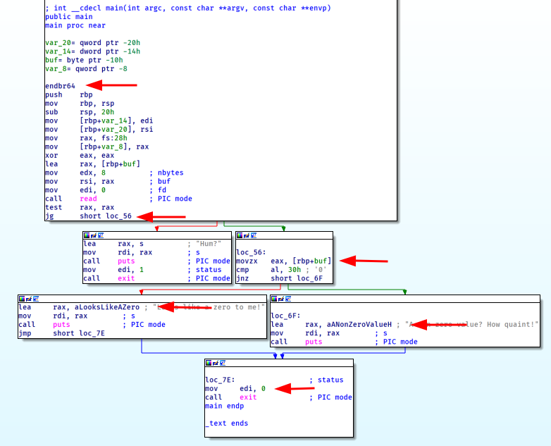
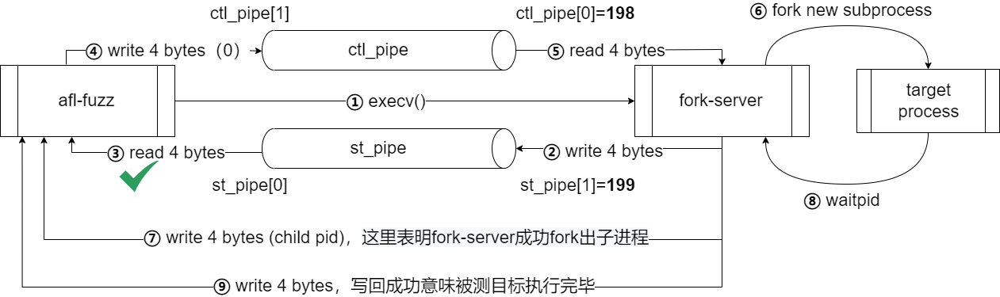

AFL-study
序言
模糊测试 （fuzz testing, fuzzing）是一种软件测试技术。其核心思想是将自动或半自动生成的随机数据输入到一个程序中，并监视程序异常，如崩溃，断言（assertion）失败，以发现可能的程序错误，比如内存泄漏。模糊测试常常用于检测软件或计算机系统的安全漏洞。
AFL
AFL（American fuzzy lop）采用基于指令覆盖引导的生成算法，通过记录样本的代码覆盖率，以此进行反馈，对输入样本进行调整以提高覆盖率，从而提升发现漏洞的可能性。
整个算法可以概括为如下几部：
将用户提供的初始测试用例加载到队列中
从队列中取出下一个输入文件
尝试将测试用例修剪到不改变程序测试行为的最小尺寸
使用经过平衡和各种传统模糊测试测量反复变异文件
如果生成的变异产生了新的指令状态记录，则将变异输出加入到队列中
重复2-5步骤
根据上面的描述，有如下疑问：
如何记录代码覆盖率
如何变异输入文件
AFL项目开源，因此可以基于源码对上面的问题进行研究
AFL项目结构
插桩模块
afl-as.hafl-as.cafl-gcc.c普通插桩模式，针对源码进行插桩（实际是针对源码编译后的汇编文件进行插桩，默认只支持x86平台）
llvm_mode
llvm插桩模式，针对源码插桩（对clang编译器生成的IR插桩，因此可以支持多平台）
qemu_mode
qemu插桩模式，针对二进制文件插桩（对qemu源码进行patch，对elfload与cpu-exec进行插桩，由于需要使用qemu与不能直接对样本插桩，该模式性能与效果较差）
fuzzer模块
afl-fuzz.cAFL的主体，fuzzer实现的核心代码
其他辅助模块
afl-analyze
对测试用例进行分析，通过分析给定的用例，确定是否可以发现用例中有意义的字段
afl-plot
生成测试任务的状态图
afl-tmin
对测试用例进行最小化
afl-cmin
对语料库进行精简操作
afl-showmap
对单个测试用例进行执行路径跟踪
afl-whatsup
各并行例程fuzzing结果统计
afl-gotcpu
查看当前CPU状态
插桩模块
AFL基于指令插桩实现代码覆盖率的记录
普通插桩
- afl-gcc
使用afl-gcc对源码进行编译进行普通插桩，afl-gcc是gcc或者clang的wrapper
afl-gcc.c主要执行下面三个操作：
1 | |
edit_params对编译参数进行修改，主要操作包括替换afl-xxx编译器为实际编译器（如afl-gcc->gcc），修改移除部分参数，添加额外参数
1 | |
1 | |
完成参数的修改后，使用真正的编译器对源码进行编译，因为参数中添加了-B afl-as，编译过程中使用afl-as对编译产生的汇编文件进行处理
- afl-as
afl-as实际上也是一个wrapper，对编译产生的汇编文件进行处理后再调用真实的as进行汇编
1 | |
edit_params将参数中的afl-as替换为真实的as，再将输入文件路径替换为插桩后的文件路径
add_instrumentation是插桩函数，对传入的汇编代码进行修改，插入的代码有两种类型，探针trampoline_fmt与主体代码main_payload，两部分代码定义与afl-as.h中
探针的插入包含两条规则
1 | |
1 | |
例如下面的代码，将在标记的几个位置插入探针

main_payload插入在整个汇编文件的尾部
插入的探针代码如下
1 | |
代码的内容为保存寄存器，调用__afl_maybe_log，参数为一个在探针插入阶段生成的随机数，该随机数用于标识探针所在的代码块
__afl_maybe_log位于main_payload中，对应的伪c代码如下
1 | |
在第一次调用__afl_maybe_log时，_afl_area_ptr与_afl_global_area_ptr均为空，执行下面的代码，从环境变量中获取共享内存ID，并将共享内存连接到进程中
1 | |
探针用于追踪程序的控制流，核心代码如下，将tramp_num异或上一个块的记录，随后将共享内存中对应的字节+1，将tramp_num右移一位存入_afl_pre_loc，通过该方式实现了将程序执行的边记录到共享内存中
1 | |
在_afl_maybe_log中还有一部分代码使用管道与afl-fuzz进行通信，使用fork创建子进程，子进程继续运行测试样例，父进程作为fork-server，等待子进程结束并与afl-fuzz进行通信
1 | |
在AFL中，
afl-fuzz中init_forkserver()是初始化forkserver的函数：在该函数中，
afl-fuzz会fork出一个子进程，并为管道分配新的fd（198 ==> 控制管道ctl_pipe[0]，199 ==> 状态管道st_pipe[0]）。而这个子进程execv一个被测程序，这个被测程序（i.e. fork-server）在调用第一个__afl_maybe_log()函数时，首先会向状态管道写入4字节的任意数据，然后将在while循环中的第一个read(198, &_afl_temp, 4)处阻塞，等待AFL-fuzzer发来信息；而在
afl-fuzz父进程中，通过读取状态管道4字节的数据来判断是否成功启用fork-server
在AFL中，
run_target()将通知fork-server出一个新的子进程来跑模糊测试生成的测试用例：afl-fuzz进程将4个字节的超时时间写入到控制管道fork-server在读取到4个字节（0）之后，将停止阻塞。然后fork()出一个新的子进程来跑实际的被测目标，pid将通过状态管道送回给afl-fuzzer，然后收集覆盖率信息。这里fork-server将这读入的四字节0用于waitpid()的第二个参数，然后等待子进程执行完毕。子进程执行完毕之后，fork-server再向状态管道写入4字节，表明被测程序执行完毕afl-fuzz根据fork出来的被测程序pid的结束信号和覆盖率信息做进一步的分析处理
流程图如下所示。其中 ①→②→③ 为创建
fork-server的过程，④→⑤→⑥→⑦→⑧→⑨ 为一次完整的run_target()的过程。

llvm插桩
- afl-clang
使用afl-clang-fast编译源码可以进行llvm插桩，通过llvm Pass在编译器运行时实现
afl-clang-fast.c与afl-gcc.c功能类似，是真实编译器的wrapper，通过添加参数-Xclang实现运行自定义的Pass
- afl-clang-pass.so
生成执行插桩Pass的动态链接库
AFLCoverage::runOnModule：用于执行转换（插桩）
创建两个全局变量：
__afl_area_ptr 用于保存共享内存区域的地址
__afl_prev_loc用于存放前一个基本块ID右移一位的值
遍历所有基本块BB：
随机生成一个基本块ID值
cur_loc载入全局变量
__afl_prev_loc载入全局共享内存区域指针
__afl_area_ptr，计算值cur_loc xor __afl_prev_loc更新比特位图：将上述计算值作为索引，在
__afl_area_ptr中寻址，让对应的字节值+1更新
__afl_prev_loc的值：__afl_prev_loc = cur_loc >> 1
registerAFLPass用来注册该AFLCoverage Pass类
此部分插桩效果如下
1 | |
- afl-llvm-rt.o
此部分代码编译连接到测试样例内
在样例程序main执行前运行__afl_auto_init调用__afl_manual_init
1 | |
__afl_manual_init中获取共享内存，启动fork-server
1 | |
__afl_map_shm和__afl_start_forkserver与普通插桩中的_afl_maybe_log部分类似
llvm mode有__AFL_LOOP的功能，但在AFL源码中似乎没看到
qemu插桩
qemu插桩主要对cpu-exec.c模块进行patch，插桩代码位于afl-qemu-cpu-inl.h
Fuzzer模块
afl-fuzz.c是AFL的核心实现，该部分代码量较大，这里仅针对输入变异部分的分析，其它部分只做简单描述
fuzzer初始化
main中首先对命令行参数进行解析，随后进行一系列初始化化操作
1 | |
第一遍fuzz
1 | |
perform_dry_run遍历测试用例队列，使用
calibrate_case对测试样例校准，根据返回值res判断错误类型calibrate_case该函数用于新测试用例的校准，在处理输入目录时执行，以便早期发现有问题的测试用例，在发现新路径时，评估新发现的测试用例是否可变，该函数在
perform_dry_runsave_if_interestingfuzz_one中被调用该函数主要操作如下
1
2
3
4
5
6
7
8
9
10
11
12
13
14
15
16
17
18
19
20
21
22
23
24
25
26
27
28
29
30
31
32
33
34
35
36
37
38
39
40
41
42
43
44
45
46
47
48
49
50
51
52
53
54
55
56
57
58
59
60
61
62// 启动和初始化fork-server
if (dumb_mode != 1 && !no_forkserver && !forksrv_pid)
init_forkserver(argv);
// copy前一次运行的指令记录
if (q->exec_cksum) {
memcpy(first_trace, trace_bits, MAP_SIZE);
hnb = has_new_bits(virgin_bits);
if (hnb > new_bits) new_bits = hnb;
}
// 对用例多次测试(确保该用例的代码覆盖清空被重复收集)
for (stage_cur = 0; stage_cur < stage_max; stage_cur++) {
// 运行测试用例
write_to_testcase(use_mem, q->len);
fault = run_target(argv, use_tmout);
// 对指令记录hash
cksum = hash32(trace_bits, MAP_SIZE, HASH_CONST);
// 如何hash与前一次运行不相同，说明路径发生了改变（或用例第一次运行）
if (q->exec_cksum != cksum) {
hnb = has_new_bits(virgin_bits);
if (hnb > new_bits) new_bits = hnb;
if (q->exec_cksum) {
// 发现新路径 记录代码覆盖率
u32 i;
for (i = 0; i < MAP_SIZE; i++) {
if (!var_bytes[i] && first_trace[i] != trace_bits[i]) {
// 代码覆盖率记录
var_bytes[i] = 1;
// 发现新路径，修改stage_max增加该用例的执行次数，用于校准该用例
stage_max = CAL_CYCLES_LONG;
}
}
var_detected = 1;
} else {
// 用例第一次运行
q->exec_cksum = cksum;
memcpy(first_trace, trace_bits, MAP_SIZE);
}
}
}
// 更新该测试用例的分数
q->exec_us = (stop_us - start_us) / stage_max;
// 这里是最后一次的路径，即测试路径趋于稳定，样例校准结束
q->bitmap_size = count_bytes(trace_bits);
q->handicap = handicap;
q->cal_failed = 0;
total_bitmap_size += q->bitmap_size;
total_bitmap_entries++;
update_bitmap_score(q);
// 如果在该测试用例下路径发生变化，将该用例标记为可变
if (var_detected) {
var_byte_count = count_bytes(var_bytes);
if (!q->var_behavior) {
mark_as_variable(q);
queued_variable++;
}
}init_forkserverrun_target这部分在插桩的环节分析过
fork-server与测试程序通信，fuzzer本身不fork子进程用于测试，run_target执行时通过fork-server管道与测试程序通信，通知测试程序fork出子进程用于测试，避免由fuzzer进行fork后execv的性能损耗这两个函数很重要，但是与输入变异的关系不大，因此不做过多分析
update_bitmap_score发现新路径时，判断新路径是否更有利（用例大小与执行时间更小），记录每一条边的最优用例
1
2
3
4
5
6
7
8
9
10
11
12
13
14
15
16
17
18
19
20
21
22
23
24// 使用用例执行时间与用例大小决定该用例的有利程度
u64 fav_factor = q->exec_us * q->len;
for (i = 0; i < MAP_SIZE; i++)
// 检查每一个bit位（即用例的指令边）
if (trace_bits[i]) {
if (top_rated[i]) {
// 比较bit位的fav_factor与该用例的fav_factor
if (fav_factor > top_rated[i]->exec_us * top_rated[i]->len) continue;
if (!--top_rated[i]->tc_ref) {
ck_free(top_rated[i]->trace_mini);
top_rated[i]->trace_mini = 0;
}
}
// 该用例更有利，加入到rop_rated中
top_rated[i] = q;
q->tc_ref++;
if (!q->trace_mini) {
q->trace_mini = ck_alloc(MAP_SIZE >> 3);
minimize_bits(q->trace_mini, trace_bits);
}
// fuzz的分数发生了变化
score_changed = 1;
}cull_queue当前面
update_bitmap_score中分数发生变化时，根据top_rated对测试用例队列进行更新，只保留在top_rated中的用例1
2
3
4
5
6
7
8
9
10
11
12
13
14
15
16
17
18
19
20
21
22
23
24
25
26q = queue;
// 先清空所有用例的favored状态
while (q) {
q->favored = 0;
q = q->next;
}
for (i = 0; i < MAP_SIZE; i++)
if (top_rated[i] && (temp_v[i >> 3] & (1 << (i & 7)))) {
u32 j = MAP_SIZE >> 3;
while (j--)
if (top_rated[i]->trace_mini[j])
temp_v[j] &= ~top_rated[i]->trace_mini[j];
// 将top_rated中的用例的favored状态置为1
top_rated[i]->favored = 1;
queued_favored++;
if (!top_rated[i]->was_fuzzed) pending_favored++;
}
q = queue;
// 根据用例的favored状态对用例进行标记，标记和移除冗余用例
while (q) {
mark_as_redundant(q, !q->favored);
q = q->next;
}
fuzzer主循环
主循环中使用cull_queue对队列进精简，从链表中找到接下来要测试的用例queue_cur，随后调用fuzz_one进行变异和fuzz
fuzz_one
AFL核心，对输入变异的实现
根据是否有
pending_favored和queue_cur的情况，按照概率进行跳过；有pending_favored, 对于已经fuzz过的或者non-favored的有99%的概率跳过；无pending_favored，95%跳过fuzzed&non-favored，75%跳过not fuzzed&non-favored，不跳过favored1
2
3
4
5
6
7
8
9
10
11
12
13
14
15
16if (pending_favored) {
/* If we have any favored, non-fuzzed new arrivals in the queue,
possibly skip to them at the expense of already-fuzzed or non-favored
cases. */
if ((queue_cur->was_fuzzed || !queue_cur->favored) &&
UR(100) < SKIP_TO_NEW_PROB) return 1;
} else if (!dumb_mode && !queue_cur->favored && queued_paths > 10) {
/* Otherwise, still possibly skip non-favored cases, albeit less often.
The odds of skipping stuff are higher for already-fuzzed inputs and
lower for never-fuzzed entries. */
if (queue_cycle > 1 && !queue_cur->was_fuzzed) {
if (UR(100) < SKIP_NFAV_NEW_PROB) return 1;
} else {
if (UR(100) < SKIP_NFAV_OLD_PROB) return 1;
}
}检测用例是否被校准成功，如果校准失败，则对用例重新进行校准
1
2
3
4
5
6
7
8
9
10
11
12
13// 用例校准识别则重新校准用例
if (queue_cur->cal_failed) {
u8 res = FAULT_TMOUT;
if (queue_cur->cal_failed < CAL_CHANCES) {
queue_cur->exec_cksum = 0;
// 对用例重新校准
res = calibrate_case(argv, queue_cur, in_buf, queue_cycle - 1, 0);
}
if (stop_soon || res != crash_mode) {
cur_skipped_paths++;
goto abandon_entry;
}
}对测试用例进行修剪
1
2
3
4
5
6
7
8
9
10if (!dumb_mode && !queue_cur->trim_done) {
// trim_case通过修剪用例，使用run_target对用例进行测试，得到不影响测试结果的最小用例
u8 res = trim_case(argv, queue_cur, in_buf);
if (stop_soon) {
cur_skipped_paths++;
goto abandon_entry;
}
queue_cur->trim_done = 1;
if (len != queue_cur->len) len = queue_cur->len;
}对用例性能进行打分
1
2// 基于用例的执行时间与代码覆盖率计算用例的分数
orig_perf = perf_score = calculate_score(queue_cur);
变异策略
如果该queue已经完成deterministic阶段，则直接跳到havoc阶段，进行
havoc和splice1
2
3
4if (skip_deterministic || queue_cur->was_fuzed || queue_cur->passed_det)
goto havoc_stage;
if (master_max && (queue_cur->exec_cksum % master_max) != master_id - 1)
goto havoc_stage;deterministic阶段包含
bitfliparithmeticinterestdictionary4个阶段common_fuzz_stuffsave_if_interesting在上面的6个变异阶段中，每产生一次变异，使用
common_fuzz_stuff对变异后的用例进行测试，用例执行结束后使用save_if_interesting检查是否需要保留变异1
2
3
4
5
6
7
8
9
10
11
12
13if (!(hnb = has_new_bits(virgin_bits))) {
if (crash_mode) total_crashes++;
return 0;
}
// 如果变异产生了新的路径则保留该变异
add_to_queue(fn, len, 0);
if (hnb == 2) {
queue_top->has_new_cov = 1;
queued_with_cov++;
}
queue_top->exec_cksum = hash32(trace_bits, MAP_SIZE, HASH_CONST);
// 对变异进行校准
res = calibrate_case(argv, queue_top, mem, queue_cycle - 1, 0);
bitflip
按位翻转，每次都是比特级别的操作，从1bit到32bit，从文件头到文件尾
1 | |
bitflip 1/1每次翻转1 bit，按1bit步长从头开始bitflip 2/1每次翻转相邻2 bit，按1bit步长从头开始bitflip 4/1每次翻转相邻4 bit，按1bit步长从头开始bitflip 8/8每次翻转相邻8 bit，按8bit步长从头开始bitflip 16/8每次翻转相邻16 bit，按8bit步长从头开始bitflip 32/8每次翻转相邻32 bit，按8bit步长从头开始
在bitflip 1/1阶段中，如果在翻转某段中任意1个bit都还导致路径发生改变，则会提取该部分作为token，通过该方式可以发现一些特殊的token
1 | |
在bitflip 8/8阶段，会根据翻转结果对eff_map进行标记，根据对一个字节翻转的结果进行标记，如果该字节未标记为有效，在后续的deterministic阶段就会跳过该字节的变异
1 | |
arithmetic
算数阶段对输入文件进行加减操作
arith 8/8，每次8bit进行加减运算，8bit步长从头开始arith 16/8，每次16bit进行加减运算，8bit步长从头开始arith 32/8，每次32bit进行加减运算，8bit步长从头开始
加减操作的次数定义在在config.h中
1 | |
在这里对整数目标进行+1，+2，+3…+35，-1，-2，-3…-35的变异，AFL对整数的大小端表示方式都进行了变异，为了避免冗余的变异，如果加减某数的结果可由bitflip阶段产生，则不执行该变异
1 | |
interest
该阶段与arithmetic阶段类似，将一些interesting values替换到文件中
interest 8/8，每次8bit进行替换，8bit步长从头开始interest 16/8，每次16bit进行替换，8bit步长从头开始interest 32/8，每次32bit进行替换，8bit步长从头开始
用于替换的interesting values定义在config.h中，基本
1 | |
同样的，该阶段也会跳过由bitflip arithmetic阶段产生过的变异
dictionary
此阶段使用字典进行变异，将用户提供的token和自动生成的token通过对输入文件进行替换和插入
user extras (over)，从头开始，将用户提供的tokens依次替换到原文件中user extras (insert)，从头开始，将用户提供的tokens依次插入到原文件中auto extras (over)，从头开始，将自动检测的tokens依次替换到原文件中
其中 user extras是一开始通过 -x 选项指定的，如果没有则跳过对应的子阶段；auto extras是第一个阶段 bitflip 生成的。
havoc
此阶段进行随机变异，包含多轮操作，每轮操作进行随机次变异，每次变异随机选择一种变异方式
1 | |
- 随机选取某个bit进行翻转
- 随机选取某个byte，将其设置为随机的interesting value
- 随机选取某个word，并随机选取大、小端序，将其设置为随机的interesting value
- 随机选取某个dword，并随机选取大、小端序，将其设置为随机的interesting value
- 随机选取某个byte，对其减去一个随机数
- 随机选取某个byte，对其加上一个随机数
- 随机选取某个word，并随机选取大、小端序，对其减去一个随机数
- 随机选取某个word，并随机选取大、小端序，对其加上一个随机数
- 随机选取某个dword，并随机选取大、小端序，对其减去一个随机数
- 随机选取某个dword，并随机选取大、小端序，对其加上一个随机数
- 随机选取某个byte，将其设置为随机数
- 随机删除一段bytes（该操作概率是其它操作的两倍，目的是使变异文件尽可能小）
- 随机选取一个位置，插入一段随机长度的内容，其中75%的概率是插入原文中随机位置的内容，25%的概率是插入一段随机选取的数
- 随机选取一个位置，替换为一段随机长度的内容，其中75%的概率是替换成原文中随机位置的内容，25%的概率是替换成一段随机选取的数
- 随机选取一个位置，用随机选取的token（用户提供的或自动生成的）替换
- 随机选取一个位置，用随机选取的token（用户提供的或自动生成的）插入
splice
该阶段AFL从输入文件队列中随机选择另一个文件，比较起与当前文件的差异，如果差异较小则重新选取，如果差异较大则随机选择一个位置将两个文件切开，将当前文件的前半部分与随机选择文件的后半部分进行拼接，回到havoc阶段继续变异
AFL++
AFL++是AFL的增强版本，相较于AFL，AFL++具有更高性能的llvm_mode、支持更高版本的llvm、具有更高性能的qemu_mode，以及更好的*BSD与Android支持
AFLFast调度器更注重低频的路径的探索，以在相同的时间内测试更多的程序行为
MOpt变异调度器（比AFL的随机变异更科学）
自定义变异器API AFL++将变异器API化，方便调用和自定义，可以实现在AFL++上构建新的调度算法、变异算法等
unicorn_mode 实现了可以测试完全不同平台的二进制程序
…
AFL-FUZZ
AFL++的核心实现仍在afl-fuzz中，由于代码规模较大，拆分为了多个文件，fuzz的变异的实现在afl-fuzz-one.c的fuzz-one函数中
fuzz-one中，除了使用afl的经典变异策略外，还增加了MOpt变异
1 | |
MOpt变异
1 | |
变异策略
fuzz_one_original
AFL++变异策略与AFL相似，AFL++的deterministic阶段与AFL相同，包含bitflip arithmetic interest dictionary4个阶段，在havoc与splice阶段前增加了custom mutator阶段，此阶段使用自定义的变异器对输入文件进行变异
1 | |
mopt_common_fuzzing
mopt+common_fuzzing的很大一部分内容与经典afl的fuzz-one相似，也同样包含bitflip arithmetic interest dictionary四个deterministic阶段以及havoc splice两个随机变异阶段
与经典afl不同的是，在havoc阶段选择变异方式时，使用select_algorithm函数进行选择，而非直接使用随机数
1 | |
相较于随机，该算法更科学？
1 | |
参考文章
google/AFL: american fuzzy lop - a security-oriented fuzzer (github.com)
AFL二三事——源码分析 - FreeBuf网络安全行业门户
AFL++学习日志（一）开始Fuzz与crashes分析 - Hanyin’s Space (mundi-xu.github.io)